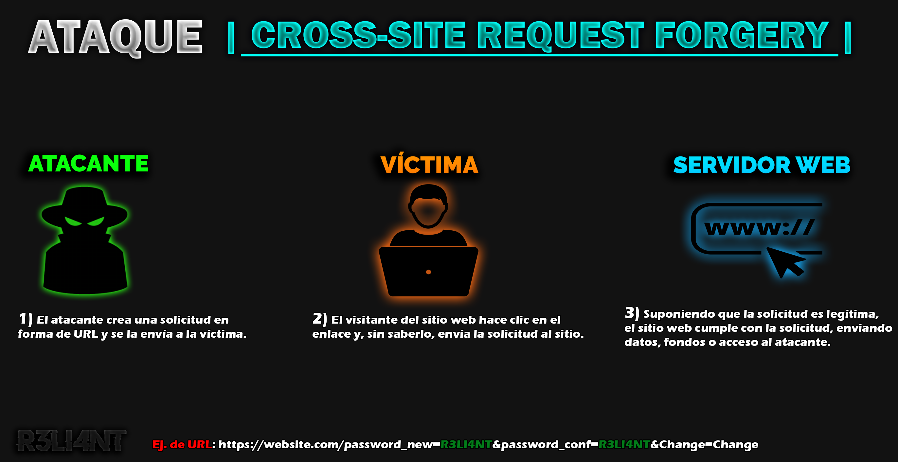

# VULNERABILIDAD CSRF | Cross-site Request Forgery |
La vulnerabilidad CSRF (falsificación de petición en sitios cruzados) ocurre en aplicaciones web y permite a los atacantes realizar acciones a nombre de usuarios legítimos que se encuentran desprevenidos, explotando así sus sesiones autenticadas. El ataque suele ir acompañado con técnicas de ingeniería social dado que el usuario debe estar conectado a la plataforma para que éste visite el enlace malicioso.
Requisitos previos para un Ataque CSRF
Para explotar una vulnerabilidad CSRF (Cross-Site Request Forgery), deben cumplirse varias condiciones esenciales:
-
Identificar una acción valiosa: El atacante debe encontrar una acción en la aplicación web que tenga valor y pueda ser explotada. Las acciones valiosas incluyen: -
Cambiar la contraseña: Modificar la contraseña del usuario para que el atacante pueda tomar el control de la cuenta. -
Cambiar el correo electrónico: Actualizar la dirección de correo electrónico del usuario, permitiendo que el atacante reciba futuras comunicaciones o reinicios de contraseña. -
Elevar privilegios: Incrementar el nivel de acceso de una cuenta para obtener mayores permisos dentro del sistema. -
Realizar transferencias financieras: En aplicaciones bancarias, realizar transferencias de dinero no autorizadas.
En resumen:
Para que un ataque CSRF sea posible, el atacante debe encontrar una acción valiosa que explotar, asegurarse de que la sesión del usuario se gestione a través de cookies o autenticación básica HTTP, y verificar que la solicitud no contenga parámetros impredecibles que podrían invalidar el intento de ataque.

# EXPLOTAR CSRF | Login
En el siguiente ejemplo, les mostraré cómo explotar la vulnerabilidad CSRF en una sesión, para ello elegí la máquina Metasploitable 2 con víctima.
Supongamos que queremos cambiar la contraseña de nuestra cuenta desde la configuración del sitio web, para ello existen dos métodos de petición para ejecutar la acción.
Método GET: Se utiliza para pedir información al servidor, los datos son enviados de forma visible en la URL.
Por ejemplo:
$ http://www.myweb.com/action.php?nombre=wilson&apellidos1=smithMétodo POST: Se utiliza para subir un archivo o loguearse en el sitio web, los datos son enviados de forma codificada (no visible); siendo está la más segura.
Por ejemplo:
$ http://www.myweb.com/action.phpCon la herramienta Burp Suite lo que haremos es configurar un Proxy e interceptar la petición y modificarla. Para ello, debemos de ir a la configuración de nuestro navegador > Newtork Settings y copiar lo siguiente:
| Manual Proxy | Valor |
|---|---|
| HTTP Proxy | 127.0.0.1 |
| Port | 8080 |
En la pestaña de Proxy de Burp Suite tienen que tener estos valores configurado (por defecto) > ProxySettings.
El Intercep debe estar activado (ON). Ahora, si tratamos de cambiar nuevamente nuestra contraseña:
La petición es interceptada pero sale en método POST ¿cómo es posible cambiarla a método GET?, es tan fácil como seleccionar la petición > clíc derecho y Change method request.
Por lo que quedaría así (método GET):
$ /dvwa/vulnerabilities/csrf/?password_current=admin&password_new=R3LI4NT&password_conf=R3LI4NT&Change=Change Al copiar esta URL y pegarla en el navegador, se cambiaría automáticamente la contraseña sin necesidad de ir al panel de configuración; pero sí es preciso que la persona este autenticada.
Y se preguntarán... ¿y dónde está el peligro? Bien, supongamos que quisieramos cambiarle la contraseña a un administrador o a un usuario su contraseña bancaria, aquí es donde entraría la técnica de phishing que mencioné al principio. Como primer paso debemos asegurarnos que la víctima se encuentre autenticada en la plataforma, luego enviar el link malicioso (URL modificada) sin antes camuflarla.
En este ejemplo me hice pasar por el Banco Santander a través de un email suplantado, para que no sea sospechoso camufle el botón "Ver Políticas" con un vínculo por detrás (la URL modificada).
Del lado de la víctima se vería de la siguiente manera:
Una vez que haga clíc en el bóton "Ver Políticas", automáticamente se le cambiará la contraseña y podremos acceder a su cuenta. Este ejemplo es sencillo, pero en ciertos casos es necesario requerir del usuario.
En otro artículo enseño a como crear una firma y camuflar un link.
# MITIGAR VULNERABILIDAD CSRF
Para mitigar una vulnerabilidad de Cross-Site Request Forgery, se pueden implementar varias técnicas y prácticas.
- CSRF Token: Consiste en generar un token único y aleatorio para cada formulario o solicitud que el usuario realiza desde el navegador. Cuando se realiza la solicitud, el servidor la valida o rechaza.
Para generar un CSRF Token se puede hacer uso de la función random_bytes() para generar una cadena de bytes aleatorios y luego convertirla a otra cadena en hexadecimal usando la función bin2hex().
Paso 1) Generar un token CSRF de 32 bytes y conviértelo en una cadena hexadecimal:
$ $token = bin2hex(random_bytes(32));Paso 2) Asociar el Token CSRF con la Sesión del Usuario:
$ $_SESSION['csrf_token'] = $token;Ejemplo completo:
$ session_start(); // La sesión debe estar iniciada
if (empty($_SESSION['csrf_token'])) {
$token = bin2hex(random_bytes(32));
$_SESSION['csrf_token'] = $token;
}Por último, incluir el token CSRF en todos los formularios HTML:
$ <form method="post" action="process_form.php">
<input type="hidden" name="csrf_token" value="<?php echo htmlspecialchars($_SESSION['csrf_token']); ?>">
<input type="submit" value="Submit">
</form>Por parte del usuario, se recomienda:
-
Mantener el navegador actualizado y seguro que implemente medidas contra ataques CSRF.
-
No permanecer con sesiones sensibles abiertas.
-
Evitar el uso de cuentas privilegiadas cuando no lo requiera.
-
Revisar cuidadosamente dónde se hace clíc.
-
Utilizar extensiones del navegador que ayuden a detectar y prevenir ataques CSRF. Alguna de ellas: No-CSRF, NoScript Security Suite.